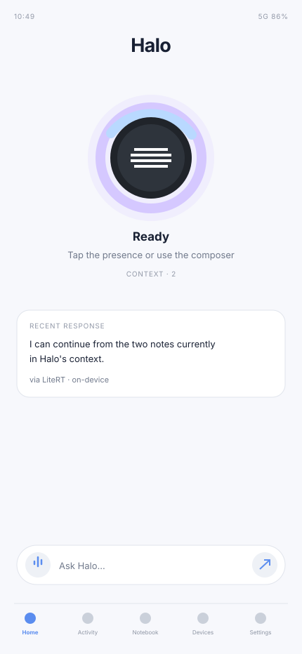
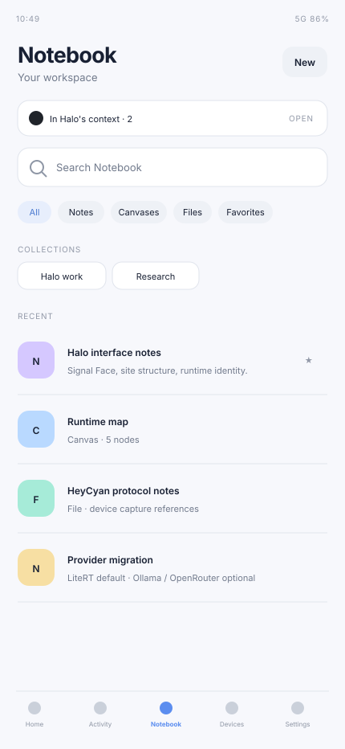
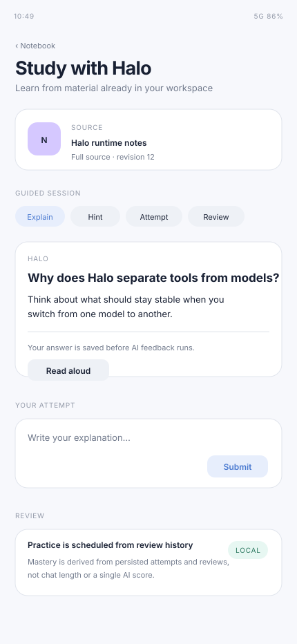
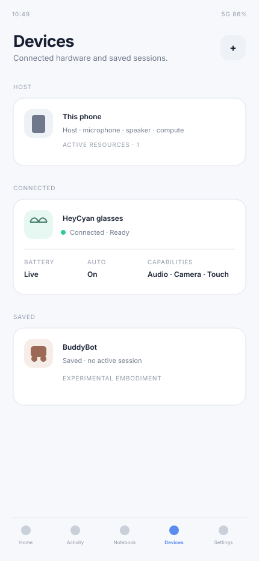
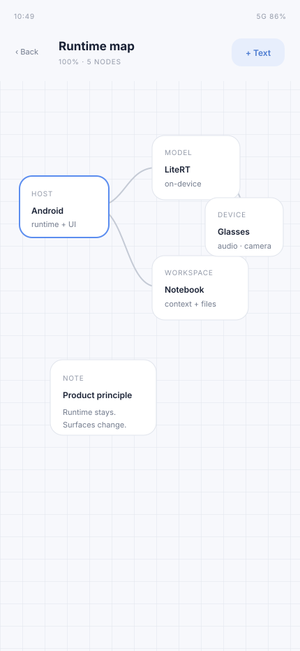

Control the phone
Set alarms and timers. Change volume, ringer mode, brightness and flashlight. Open settings and apps.
Examples: “Set a 12 minute timer.” · “Put the phone on vibrate.”OPEN SOURCE · ANDROID FIRST · ALPHA PREPARATION
Halo is an open-source Android assistant and cognitive runtime. It can answer with an on-device model, use real phone tools, work with your notes and study material, and extend the same runtime to connected devices. No Halo account or mandatory cloud is required.

Voice, text, local AI, phone actions, Notebook and Study do not depend on smart glasses.
Keep inference on-device, use a machine on your LAN, or connect a remote provider explicitly.
Glasses, headsets and robots extend input, output and actions instead of becoming a separate assistant.
01 · THE PRODUCT
Halo brings everyday assistance, documents, learning and connected devices into one place. Home is the assistant. Notebook is the workspace. Study turns workspace material into guided learning. Intelligence controls models and providers. Devices show the hardware currently attached to the runtime.




Halo does not yet keep a canonical set of emulator/device screenshots in the main repository. These static UI captures are reconstructed from the current Compose source and are intentionally separate assets so native captures can replace them without changing the page layout.
02 · PHONE ACTIONS
Halo's current Android source contains host tools for everyday phone work. The model does not receive the entire tool registry at once: Halo discovers and exposes the small set of tools relevant to the current request.
Set alarms and timers. Change volume, ringer mode, brightness and flashlight. Open settings and apps.
Examples: “Set a 12 minute timer.” · “Put the phone on vibrate.”Find contacts, open the dialer, launch navigation, open URLs, search the web, share text and control media.
External handoffs are reported as dispatched—not falsely claimed as completed.Inspect device, battery and network state; read clipboard text; fetch a web page; search files and Notebook.
Sensitive reads use the tool policy and approval system rather than bypassing it.Read the current Android screen, find UI elements, and use accessibility-backed click, scroll and text entry when needed.
Screen-changing accessibility actions are explicitly confirmation-gated.ACTION TRUTH
Halo journals tool calls and outcomes before continuing the conversation. It distinguishes a successful action from a rejection, failure, external handoff or unknown completion state, and recovery is designed not to replay a completed side effect just because the app restarted.
03 · CHOOSE YOUR AI
Halo separates the runtime from the model. Changing provider changes where reasoning happens; it does not replace the assistant, workspace, tools or device layer.
Halo's first-run target is Qwen 3 0.6B Dynamic INT4. After the model is installed, normal local inference does not require a Halo account or cloud service.
Use Ollama, OpenCode Companion or a custom OpenAI-compatible endpoint on a machine you control.
Gemini, OpenRouter, OpenAI, Anthropic, Groq, Cerebras, xAI, OpenCode Zen and compatible endpoints can join the provider fabric.
The current app supports Google authorization with a Cloud project, alongside an API-key fallback.
Free access, model availability and limits depend on the provider and may change.
A selected provider failure is not permission to silently move private context to another provider.
Credential storage is migrated to Android Keystore-backed secret storage instead of ordinary app preferences.
04 · NOTEBOOK + STUDY
Halo keeps user-visible work in Notebook. You decide what enters the working context, and Study can turn a chosen source into a persistent learning session instead of hiding everything inside a chat history.

Add or remove workspace objects from Halo's context deliberately instead of guessing what the assistant remembers.
Keep notes, files, conversations and collections together. Canvas adds a visual space for arranging ideas, images and documents, with PDF tools being actively developed.
Study sessions bind to a source revision, persist attempts before AI feedback, track review history and can narrate through Halo's speech route.
Notebook storage and cognitive memory are separate concepts. Promoting something into memory is a distinct action, not an automatic side effect of writing a note.
05 · DEVICES
Halo models hardware by capability: microphone, speaker, camera, controls, sensors or physical actions. That lets the same runtime work with different devices without turning one glasses brand into the architecture.
Runs the UI, runtime, local inference, system tools and workspace. Halo remains useful with no wearable connected.
BLE/device control, microphone capture, media transfer and glasses-aware routing are integrated. Microphone capture has physical evidence; the latest speaker-output route still needs post-fix hardware acceptance.
Android audio devices can participate as input/output endpoints. Interaction-origin routing prefers the surface where the interaction started when the route is available.
A physical Halo host for proving capability, safety and action contracts. It is an experimental embodiment—not the definition of Halo.
06 · WHY A RUNTIME?
Halo keeps the durable parts—context, provider choice, tools, approvals, execution truth, devices and recovery—outside any single model. Android is the first host, not the permanent boundary.
Tools request semantic capabilities; hosts and devices publish what they can actually provide.
Local-only and explicit provider choices are enforced before context is acquired and sent.
The durable execution journal records claims and outcomes so recovery can continue without blindly repeating completed work.
07 · PROJECT STATUS
Halo is preparing for early testers. Features are still changing, and the source is ahead of full physical acceptance. This page describes what exists in current source and calls out the most important validation boundaries.
Qwen has produced successful local answers on-device. HeyCyan microphone capture also has physical evidence from the supplied hardware run.
Runtime, LiteRT, Android host, AI engine and app unit/compile suites passed for the RUNTIME-050 phone-action batch.
Recent assistant-role, provider, resource, action-continuation and hardware-output changes still require the planned physical-phone and HIL stabilization runs.
OPEN DEVELOPMENT
Halo is open source and intentionally local-first. The repository keeps a current-state ledger so “present in code,” “tested,” and “physically accepted” do not get collapsed into one claim.
08 · HALO ALPHA TESTING
You don't need smart glasses, technical experience, or your own documents. Start with a published Android build if one is available, download the free example files below, and tell us where Halo feels clear—or confusing. The test route is a guide, not an exam.
Check Android releases ↗. No published APK? The app is not yet available through this programme.
One short reading, one observation image, and a quick route through the wider app.
Use the checklist, skip hardware you don't own, and note what actually happens.
Report confusing moments as well as broken features. Both help shape Halo.
FREE · NO ACCOUNT · TEST DATA
The small Study example follows three basil seedlings with different daily light exposure. Its PDF has the background facts, and the image holds the final measurements. Together they reveal whether Halo actually uses the source—or merely makes up a convincing answer.
Sample measurements are fictional and intended only for testing. Some Study image tasks require a configured vision-capable model.

YOUR DOWNLOADS
Each file downloads directly from this website. Start with the guide, then import the other materials into Halo as needed.
A THOUGHTFUL FIRST RUN
Tick a step when you've tried it—not only if it passed. Checkmarks are stored in this browser, never sent to Halo.
A missed feature, unsupported file, failed provider, or missing permission is valuable test evidence. Record the actual outcome instead of marking a guess as success.
FOUND SOMETHING?
Tell us which screen you were on, what you tried, what you expected and what actually happened. Include your Android and Halo versions if relevant. Never post API keys, personal files, identifiers, or unredacted private logs.
Halo version / Android version: Screen or feature: What I tried: Expected: Actual: Steps to reproduce: Screenshot (redact private data):
Alpha means unfinished software. Features and supported devices can change. Back up important work and avoid relying on Halo for safety-critical tasks. A public build only exists when a release appears on GitHub Releases ↗.